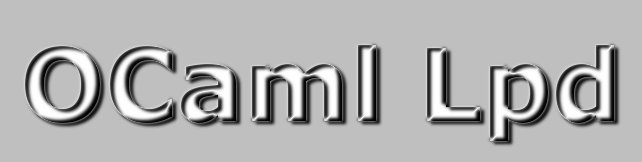

|  |
||
|
Summary Interfaces Download License |
OCaml Lpd is a library to construct Line Printer Deamons. It allows to define your own actions for LPD events. As an example, a spooler is provided that prints jobs on win32 machines (through GSPRINT)--very useful for win32 only printers. For a complete description of the functions, see the interface Lpd. A small Socket module is included that defines buffered fonctions on sockets that work even on platforms where in_channel_of_descr does not work. Some examples are also included in the tarball. If you have questions, suggestions, bugs,... you can contact me by email: chris_77@users.sourceforge.net The code is released under the GNU Lesser General Public License (LGPL) with the same special exception as for the OCaml standard library (see the file LICENSE for more details). |
|